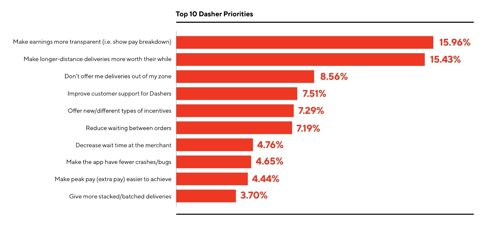

PROJECT OVERVIEW
Why did I choose DoorDash Driver app?
My personal experience
As a student living in a studio with no proper kitchen area, ordering food delivery became my everyday routine. DoorDash was the first food delivery app that I was introduced to in America and ever since then, I remained loyal to DoorDash because of their great list of local restaurants and relatively fast delivery time. I would say that my experience as a consumer was overall pretty good. However, when I talked with my friend who is a Dasher (Delivery personnel), he had a different point of view when he interacts with DoorDash. I’ve helped him a few times dashing, and I found that the Driver app had more usability problems compared to the Consumer app. As a product designer, I became more curious about the Dasher experience of the product and wanted to find design opportunities there.
Understanding the context
How DoorDash works?
Before jumping right into redesigning the Driver app, I started off with researching about the company. By doing so, I was able to get better insights into the company’s mission and how their business works. DoorDash’s mission is to connect people by empowering local businesses and generate new ways for people to earn through facilitating door-to-door delivery. Their business model targets three different user bases, which are Consumers (Ordering Food), Dashers (Delivering Food), and Merchants (Making Food). With the use of digital platforms, DoorDash tries to facilitate the interaction between consumers and food businesses.
Importance of Dasher app
In this process, Dashers play a very important role in facilitating the consumer-merchant interactions. Therefore, in order to make this interaction flow smoothly, the product that dashers are using should be efficient and easy to navigate. Not only that, there are many people in the area who dash for a living; therefore, the payment model should be transparent and be helpful for them to maintain their stable earnings.
Starting off with User Research!
EMPATHIZE WITH USER
Contextual Observation

Dashing Myself
As part of the research, I went on dashing with my friend (who is a Dasher) to experience their journey of how they interact with the Driver App in their working process. Being in the shoes of Dasher, I was able to better understand what struggles they have, and what makes them happy to go forward with their job.
Higher base pay and tips are appreciated ü§ë
Higher base pay and tips are appreciated ü§ë
User Journey

Gathering user feedback
How do dashers feel?
• Difficult to schedule for dashing in preferred time slots. -Most Complained
• Inevitable decline leading to lower acceptance rate, which brings down their motivation for work.
• Some interaction is difficult to perform while driving.
Secondary Research

I found from the data (source from DoorDash Medium article by Tony Xu) that dashers highest priority is to ensure that they make stable and expectable earnings. According to the data, they want to see how their earning breakdowns for higher transparency.
Diving into Brainstorming & Ideation!
IDEATION
My Thinking Process
As part of my design process, I usually write down the findings that I got from the User Research (Needs and Frustrations) and organize them so that I could prioritize the lists of functions/ features that should be redesigned.
Design Opportunities
1. Have difficulty with scheduling
• Dashers feel so frustrated when they find no schedule available in their preferred time and location.
• Most dashers want to dash within their area zone.
POSSIBLE SOLUTIONS
• Notify dashers when there’s possible time slots are available.
• Make it more convenient for dashers to filter locations where they would like to dash in.
2. Need for keeping up their earning
• The utmost priority for Dashers is to make more money. However, with the existing feature, it is hard for users to know how and when they could get paid more.
POSSIBLE SOLUTIONS
• Show users when’s the peak time (can get extra pay) for dashing
• Provide visual hierarchy to make it easier for Dashers to analyze and learn about their earnings.
3. Want to feel accomplished
• I found that dashers care a lot of about acceptance rate and consumer rating because those are the feedback they get on their job. They want to feel that their work is valuable and meaningful.
POSSIBLE SOLUTIONS
• Give compliments or feedback that could provide an appreciation for their achievements. I want to make sure that dashers feel satisfied with what they are doing for their job.
Lo-fidelity wireframes
Finally Moving onto Design!
DESIGN
Design exploration


Proposed solutions
1. Better scheduling & Extra earning opportunity
CURRENT
• Regions sort by alphabetical order.
• List out all the possible time slot available right now.
• Filter: The default state is all selected, so users had to manually deselect every single option that they don’t want.
REDESIGNED
• Regions sort by the closest to dasher’s current location.
• Change it to a time picker, which saves more space.
• Added a graph to visualize which time slots are busy so that dashers know when to earn extra money (peak pay).
• Filter: The default state is unselected, so users just select the one they want to add to their region.
(+NEWLY PROPOSED IDEA)
Notify when timeslot becomes available
• This new feature would help users to select a preferred time slot and get it notified in case someone else cancels or the time slots become available.
• By doing so, users don’t have to wake up early or check back manually to see if there are any open slots left.
2. Better visualization of the dasher’s earnings
CURRENT
• Lack of visual hierarchy lowers the readability of the content.
• No functionality to help dashers to analyze their earnings.
• Repetitive content that increases the number of pages being nested further in.
REDESIGNED
• Applied more visual hierarchy to emphasize the content that users care about the most.
• Added toggle tab that users could easily switch to see their earnings in a different time span.
• Added data visualization to help dashers to analyze their earnings in the breakdown (base pay, tip, peak pay).
3. Help dashers to feel a sense of achievement on their job
CURRENT
• It only shows numbers and percentages of their ratings.
• Lack of visual hierarchy of this page makes it hard for users to concentrate on these different numbers.
REDESIGNED
• Applied more visual hierarchy to make each number stand out and meaningful.
• Added some visual elements that could help dashers to feel accomplished and reflect on their performance.
• (New section) Feedback section to allow dashers to receive appreciation from users and feel more connected.
What I achieved through this challenge!
REFLECTION
What I learned
Understanding the true user needs is important.
When I first decided to do this project, I was making all sorts of assumptions. However, when I got to delve into user research, I found that the feedback that the dashers were giving were nothing like my assumption. While I was focused on the interaction aspects of the problem, dashers focused on increasing their earning and feeling happy in their job.
Providing useful and happy experience is all that matters
When it comes to redesigning, people tend to get lost in flashy visuals and interactions. However, when I did research, I found that users just want the product to be “most useful” for them. They have a clear purpose when using this product and what they want is to feel satisfied after using the app. I made sure that all the functions in this app help dashers to achieve their needs and ease their frustration.
Outcome
Incoming KPCB Design Fellow at DoorDash 2020 üéâ
The KP fellowship program actually helped me to learn more about various start-up companies in the Bay area, and it was grateful to make such achievement from this opportunity!